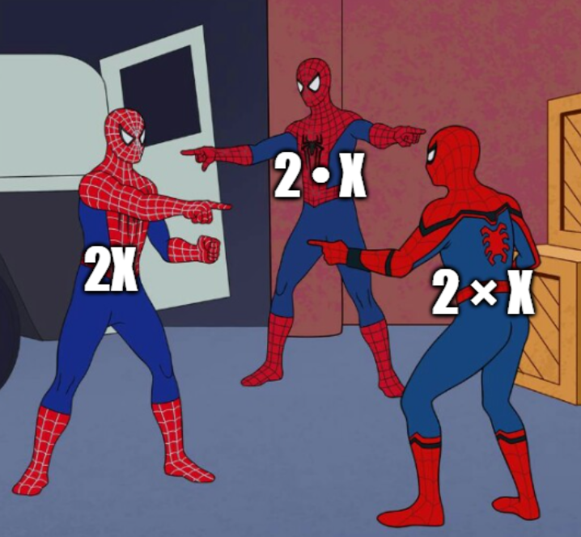

點積 Dot Product
1 向量的乘法 Product of Vectors
問吓你，$2x$, $2 \cdot x$ 同 $2 \times x$ 有咩分別？
："阿 sir 你唔好咁弱智啦。呢三嚿嘢唔係完全一樣咩？"
如果你真係咁諗，咁你就...啱啦！證明你有讀小學。

咁 $2\mathbf{x}$, $2 \cdot \mathbf{x}$ 同 $2 \times \mathbf{x}$ 有無分別？
："阿 sir 你唔好咁弱智啦。呢三嚿嘢唔係完全一樣咩？"
如果你真係咁諗，咁你就...錯啦！證明你無讀M2。
係 vector 嘅世界入面，"$\cdot$"，"$\times$"，同直接擺埋一齊，係三種完全唔一樣嘅操作！
唔同嘅寫法，完全唔一樣嘅結果
-
$k \mathbf{v}$：呢個叫做純量乘法 Scalar Multiplication。我哋上次學過啦。
條件係 scalar 乘 vector，乘完出嚟會係一個 vector。 -
$\mathbf{a} \cdot \mathbf{b}$：呢個叫點積 Dot Product。
條件係 vector 乘 vector，乘完出嚟會變返一個 scalar！ -
$\mathbf{a} \times \mathbf{b}$：呢個叫叉積 Cross Product。
條件係 vector 乘 vector，乘完出嚟會係一個同 $\mathbf{a}，\mathbf{b}$ 垂直嘅 vector！
所以喺 $2\mathbf{x}$, $2 \cdot \mathbf{x}$ 同 $2 \times \mathbf{x}$ 入面，得 $2\mathbf{x}$ 係有意思嘅。$2 \cdot \mathbf{x}$ 同 $2 \times \mathbf{x}$ 嘅結果都會係 undefined！（因爲 $2$ 唔係 vector）
Quick Check 1.1
Is $\mathbf{a} \mathbf{b}$ defined if $\mathbf{a}$ and $\mathbf{b}$ are vectors?
2 點積 Dot Product
如果你要我講咩係 dot product，我會話佢係一個"跟方向嘅乘法"。
下面有兩支 vector $\mathbf{u}$ 同 $\mathbf{v}$。試吓通過改變 $\mathbf{u}$，睇吓個 dot product $\mathbf{u} \cdot \mathbf{v}$ 會點樣改變？
你又估唔估到我所講嘅"跟方向嘅乘法"係咩意思？